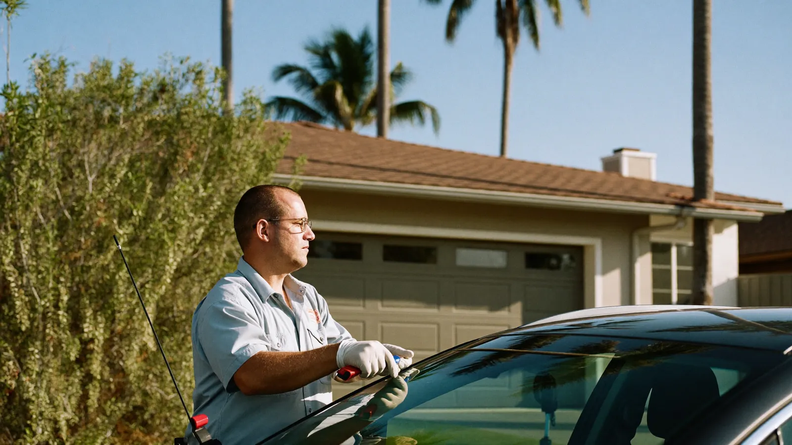
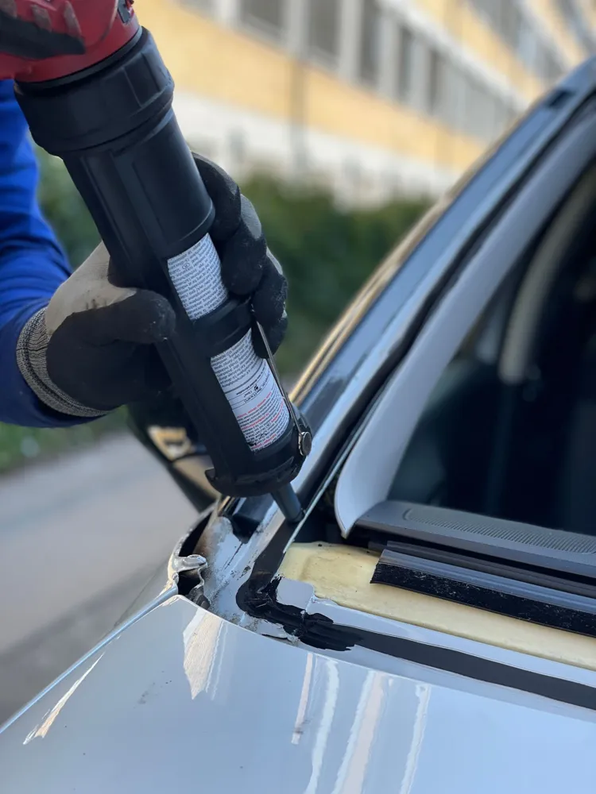

Windshield Replacement in Cocoa, FL
Windshield replacement in Cocoa for cars, trucks, and SUVs with cracked or shattered glass. A technician comes to your home or work, installs new laminated glass, and gets you back on the road the same day.
What Does Windshield Replacement Involve?
Windshield replacement in Cocoa starts with removing the wipers, cowl panel, and trim, then cutting the old urethane bond to lift out the damaged glass. The technician cleans the frame, treats any bare metal so salt air does not cause rust, and lays a fresh bead of urethane adhesive.
The new windshield is set in place with suction cup lifters and pressed into the adhesive. Trim, wipers, mirror, and sensors go back on, and the technician explains the safe drive-away time and any camera calibration needed.

When Do You Need a New Windshield in Cocoa?
You need a new windshield in Cocoa when the damage is too large or in the wrong spot for a resin repair.
- A crack longer than about six inches
- A chip or crack directly in the driver’s line of sight
- Damage that reaches the edge of the glass
- Several chips, deep pitting, or sandblasting that causes glare at night
- Leaks or a loose windshield after an earlier poor install
Why Does a Windshield Crack in Cocoa?
Windshields in Cocoa crack mainly because of rock strikes and heat. Trucks on I-95, SR-528, and US-1 throw gravel, and a small chip weakens the glass at one point. Florida sun heats the outside of the glass while the air conditioning cools the inside, and that difference pulls the chip open into a crack.
Potholes, slamming doors, and old installs with weak adhesive add more stress. Storm debris during hurricane season can also crack a windshield outright.
What Affects the Cost of Windshield Replacement in Cocoa?
The cost of windshield replacement in Cocoa depends mostly on the vehicle and the features built into the glass. Rain sensors, heated wiper areas, acoustic glass, heads-up displays, and lane-keeping cameras all add to the price. Choosing original equipment glass versus quality aftermarket glass also changes the total.
Insurance matters too. Florida drivers with comprehensive coverage may owe no deductible for a new windshield. Call (321) 417-3847 with your year, make, and model for an exact quote.
Windshield Repair vs. Replacement: Which Do You Need?
Choose a chip repair if…
The chip is smaller than a quarter, is not in the driver’s direct line of sight, and has not spread into a long crack. A repair takes about 30 minutes and keeps your original factory seal.
Choose a replacement if…
The crack is longer than a few inches, reaches the edge, or blocks your view, or there are several chips across the glass. Replacement restores the full strength of the windshield.
Still not sure? Read about windshield chip repair in Cocoa or call and describe the damage.
Frequently Asked Questions
How long after windshield replacement can I drive in Cocoa?
Most drivers in Cocoa can drive about an hour after windshield replacement, once the urethane adhesive has cured enough to hold the glass safely. The exact time depends on the adhesive and the weather that day, and the technician will tell you before leaving. Avoid car washes and slamming doors for the first day.
Is it illegal to drive with a cracked windshield in Florida?
Florida law requires a windshield in good working condition, and a crack that blocks the driver’s clear view can lead to a ticket in Cocoa. A small chip outside the line of sight is less likely to be a problem. The safest move is to repair or replace damaged glass before it spreads into your view.
Do you replace windshields with lane-keeping cameras in Cocoa?
Yes, we replace windshields on vehicles with lane-keeping cameras in Cocoa and confirm the calibration your vehicle needs before the job. Calibration makes sure the camera reads lane lines and traffic correctly after the new glass is installed. Tell us your year, make, and model when you call so the right glass and bracket are ordered.
Will my insurance pay for a new windshield in Cocoa?
Many Florida auto policies with comprehensive coverage pay for windshield replacement in Cocoa with no deductible. Your exact coverage depends on your policy and insurer. We can help you start the claim when you call so you know what is covered before work begins.
Cracked or Chipped Glass in Cocoa?
Call now for a free auto glass quote. We come to your home or job site anywhere in central Brevard County.
Call (321) 417-3847 for a Free Quote